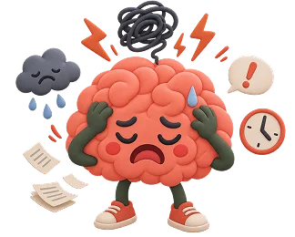

Stress
Everyone experiences stress. But when stress stays too long, it affects your sleep, health, relationships, and mood. You don't have to wait until the symptoms affect your physical and mental health. When stress lasts too long without relief, it begins to damage both your mental and physical health. Long-term stress is linked to depression, anxiety, sleep problems, and burnout. If stress is affecting your daily life, speaking with a psychologist can be helpful.
What is Stress?
Stress is the body's response to demands or situations that feel challenging, threatening, or difficult to control. It affects how we feel, how we think, and how our bodies function. Short term stress can be useful; it sharpens our attention and gives us the energy to take action.
The concern is when stress is prolonged and persistent. Then the body is unable to recover. The stress hormones cortisol and adrenaline remain high, which affects us mentally and physically. According to the Norwegian Directorate of Health and Norwegian Health Informatics (NHI). When your brain perceives a threat, whether it is a work deadline, a conflict, or financial worry, it triggers a cascade of hormones, including cortisol and adrenaline. These prepare the body to respond quickly. This is sometimes called the "fight or flight" response.
Stress is not just an emotion. It is a biological condition that affects the brain, immune system, heart, and digestion. Psychological stress and physiological stress are closely linked and reinforce each other.
Fact:
Many people used to think that stress was only something that happened to busy people with important jobs. We now know that stress affects everyone regardless of age, profession, or life situation. Young people, the elderly, students, parents, and pensioners can all struggle with stress.
Short-term stress vs. prolonged stress:

A short burst of stress, such as a job interview, an exam, or a difficult meeting, is something the body is designed to handle. Once it passes, the body returns to balance.
Prolonged stress is different. When demands or pressures continue without adequate rest or recovery, the stress response remains active, and over time this affects both body and mind.
DEPRESSION & IT'S SYMPTOMS
Symptoms of Stress
Stress manifests itself in many ways. Some people notice it first in their bodies. However, others are in their heads or in their behaviour. Here are the most common signs

Common emotional symptoms include:

What Can Cause Stress?
Stress rarely has a single cause. It usually develops from a combination of demands and a perceived lack of resources or control to meet them.
Work and performance demands
High workload, tight deadlines, lack of autonomy, conflicts with colleagues or managers, job insecurity, and a mismatch between expectations are the most common stress triggers.
Major life events and change
Life transitions like moving house, having a child, losing a job, or divorce. These factors also create stress, even when they are positive changes.
Relational difficulties
Conflict within relationships with a partner, family members, or colleagues is a consistent source of stress. Feeling misunderstood, unsupported, or trapped in a difficult relationship.
Financial and caregiving pressure
Worry about money, housing costs, or job stability creates chronic low level stress for many people.
Prolonged uncertainty
Not knowing what is going to happen with health, relationships, work, or housing is itself a major source of stress. The mind and body find unpredictability harder to manage than a clear, defined challenge, even a difficult one.
Are There Different Types of Stress?
Not all stress is the same. Understanding the type you are experiencing can help you identify what kind of support might help most.

Acute stress
Short term stress reaction to a specific event: a meeting, a conflict, or a deadline. The body activates and then calms down again. This is normal and usually harmless.
How Is Stress Assessed Professionally?
Stress is not a clinical diagnosis in itself. Moreover, it does not appear as a standalone diagnosis in the ICD 10 diagnostic system used by the Norwegian healthcare system. Professional assessment focuses on understanding how the stress is affecting you. A psychologist or GP will typically explore:

Do one small activity each day
How long the stress has been present and whether it is improving or worsening

Go outside for a short walk
How intense is the experience? Is it interfering with sleep, work, relationships, or daily functioning?

Stay in contact
Whether symptoms suggest the development of a related condition, such as burnout, depression, or an anxiety disorder

Maintain a basic routine
What are the main sources of stress, and can they be reduced

Be patient with yourself
Your coping resources: what has helped or not helped so far
Is stress a diagnosis?
Stress is not a standalone diagnosis in the ICD 10 system used in Norwegian healthcare. A psychologist can help you understand how stress is affecting you. Professional assessment focuses on understanding your experience and determining whether a diagnosable condition such as burnout, an anxiety disorder, or depression has developed and needs specific treatment.

Stress And Other Difficulties That Often Occur Together
Depression rarely occurs alone. Research found that between 15% and 44% of people with depression had also received an anxiety diagnosis and the co occurrence was found across Norway.

Stress and depression

Stress and anxiety

Depression And ADHD

Depression And Stress Or Burnout

Other Important Consideration
Stress and depression
Prolonged stress affects the brain's capacity to regulate mood. Elevated cortisol over time disrupts the neurotransmitter systems linked to depression. Untreated chronic stress is one of the most consistent pathways to a depressive episode.
Psychologist for stress
You can talk to a psychologist. Early help prevents stress from developing into burnout, anxiety, or depression. Choose the option that suits you.

Private Psychologist For Stress
Meet an experienced psychologist face to face. We help you find the right psychologist near you without a long wait.

Psychologist Online
Online psychologist for stress. It is as effective as a physical session, but from your living room. Easy for a busy everyday life.
See a psychologist and book an appointment
Book An Appointment →
How Is Stress Treated By Psychologists?
Mild, short term stress often responds well to practical changes and self help approaches. But when stress is prolonged, severe, or has developed into burnout, depression, or anxiety, working with a psychologist is beneficial.
What psychological treatment for stress involves:
Cognitive Behavioral Therapy (CBT)
helps you identify the thought patterns that trigger stress. Such as catastrophizing, perfectionism, or all or nothing thinking. CBT also includes behavioral strategies like reducing avoidance, building recovery routines, and changing the behaviors that maintain high stress levels.
.webp)
Problem-Solving Therapy
helps break down overwhelming situations into manageable steps. It is particularly useful when the cause of stress is a specific, real world problem: work conflict, financial pressure, or relational difficulty.

Acceptance And Commitment Therapy (ACT)
works differently from CBT. Instead of changing stress related thoughts, it focuses on developing a different relationship with them. Like reducing the amount of energy spent fighting or suppressing difficult feelings.
.webp)
Mindfulness Based Approaches
train attention and present moment awareness, which directly interrupts the cycle of stress. Mindfulness-Based Stress Reduction (MBSR) has a solid evidence base specifically for stress.

A note on medication:
Psychologists cannot prescribe medication. In most cases of stress even chronic stress medication is not the primary treatment. However, if stress has developed into a depressive episode or an anxiety disorder, medication may be considered alongside therapy.
If this applies to you, we can refer you internally to psychiatrist at Psykiater.no.

Relaxation And Self Help Stress Management Techniques
These measures can be started today. They are not a substitute for professional help for severe stress, but they make a noticeable difference.
| TYPE OF ANXIETY DISORDER | WHAT IT LOOKS LIKE |
|---|---|
 Breathing exercises
Breathing exercises
|
4 , 7 , 8 breathing activates the parasympathetic nervous system and reduces the stress response in minutes. |
 Daily walks
Daily walks
|
A 20 minute walk in nature significantly lowers cortisol levels. Simple, free, and very effective. |
 Journal writing
Journal writing
|
Write down your thoughts and worries. It frees up mental capacity and gives perspective on what is really stressing you out. |
|
Relaxation
|
A warm bath, progressive muscle relaxation, or massage lowers stress hormones and improves sleep quality. |
 Digital detox
Digital detox
|
Put your phone away for 5 , 6 hours. Notifications and news feeds keep your brain on alert. |
 Say no more often.
Say no more often.
|
Learn to set boundaries. Many people stress because they take on too much. "No" is a complete sentence. |
 Social network
Social network
|
Talk to someone you trust. Social support is the single strongest factor that protects against stress related illnesses. |
When Should You Seek Help for Stress?
If symptoms have been present for more than four weeks, are worsening, or are affecting your ability to function in key areas of life. That is the point at which professional support is important for the management of symptoms. Consider speaking with a psychologist if:

Stress has been present for more than four weeks without improvement

It is significantly affecting your sleep, mood, concentration, or relationships

You are using alcohol, substances, or other habits to manage the pressure

You feel unable to recover or rest even when demands temporarily ease

You have noticed increasing irritability, hopelessness, or withdrawal from others

A colleague, partner, or family member has expressed concern
Questions & Answers
Still unsure whether speaking to a psychologist is the right next step? Book a first conversation.
These are the questions people ask us most often before booking their first consultation.
Mental health is about how you feel about yourself, how you cope with everyday challenges, and how you function in relationships and work. Good mental health is not the absence of difficult emotions. However, it is the ability to manage them.
Ready To Take The First Step?
You don't have to struggle to seek help. The sooner you address your stress, the easier it is to recover. We will find the right psychologist for you.
Find A Psychologist